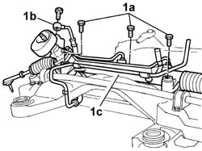

4130A15 POWER ASSISTED STEERING BOX with frame removed - R.R.
- Path
- Procedures > 41 STEERING > 4130 POWER ASSISTED STEERING > 4130A POWER STEERING BOX > 4130A15 POWER ASSISTED STEERING BOX with frame removed - R.R.
- Kind
- repair procedure (removal / refitting; the operation number is the code)
- Applies to
- all engines; all production periods
- Interactive page
- https://sloeber94.github.io/elrnDB-lThss/en/#/173161
Applies to: all engines; all production periods
 Removing
Removing
 Refitting
Refitting1. At the bench, loosen the bolts (1a), disconnect the connector (1b) for the return pipe and then remove the power assisted steering box (1c).

Applies to: all engines; all production periods
Refitting
Removing- Position the power assisted steering box and secure it to the frame tighten the bolts to the recommended torque.
 | Value - daNm | Fastening | Component | Ø |
|---|---|---|---|---|
. | 11 | Bolt | COMPLETE POWER ASSISTED STEERING BOX | M12 X 1.25 |
| Value - daNm | Fastening | Component | Ø |
|---|---|---|---|---|
. | 1.5 | Bolt | COMPLETE POWER ASSISTED STEERING BOX | M8 |
- Connect the reservoir return pipe connector to the steering box.
| Value - daNm | Fastening | Component | Ø |
|---|---|---|---|---|
. | 3 | Bolt | RETURN PIPE TO POWER STEERING RESERVOIR | M12 X 1.5 |